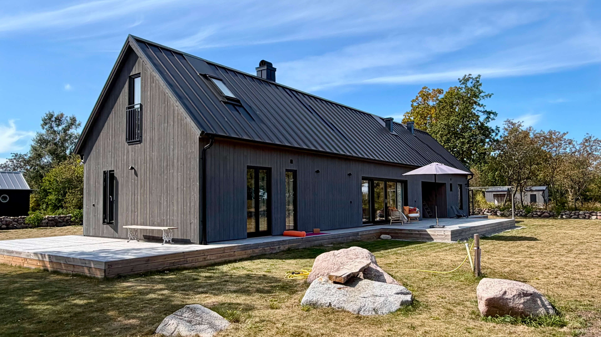

Super Duper Studios är ett arkitektkontor som bryr sig lika mycket om smarta kvadratmeter som bra estetik. Vi ritar vackra hem, men ser också till att en 3:a kan bli en 5:a och att varje investering faktiskt ökar husets värde. Oavsett om det gäller en tomt, en ombyggnad eller en idé – vi löser det.
Har du en tomt som behöver ett hus?
En planlösning som skaver, eller en 3:a som borde bli en 5:a? Kanske vill du bara bolla hur man maxar värdet på en kåk utan att kasta pengar i sjön? Hörs!
Kostnadsfri första rådgivning
Arkitektur & Rådgivning
Bolla din idé med Joacim